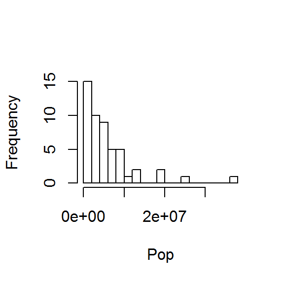

Code & Plot Chunk Options
Foreword
- Output options: the ‘tango’ syntax and the ‘readable’ theme.
- Snippets and results.
Preliminary Options
Usually, the following code is set to FALSE (not showing in a report). These are the general options. Code and plot chunks overrule the general options.
| knitr::opts_chunk$set(echo=TRUE, eval=TRUE, fig.height=3, fig.width=3)
|
Chunks
Naming a chunk is including it in the document outline. The outline is a navigation tool to jump though the document.
The dataset comes from the US Census Bureau. On their website, open Excel file ‘NST-EST2011-02’ about the annual estimates of the resident population.
The data have become an object: a data frame. Check it out, and add column names:
| ## V1 V2
## 1 Alabama 4779735
## 2 Alaska 710231
## 3 Arizona 6392013
|
| colnames(USstatePops) <- c('State', 'Pop')
head(USstatePops, 3)
|
| ## State Pop
## 1 Alabama 4779735
## 2 Alaska 710231
## 3 Arizona 6392013
|
Check out the data frame:
| ## 'data.frame': 51 obs. of 2 variables:
## $ State: Factor w/ 51 levels "Alabama","Alaska",..: 1 2 3 4 5 6 7 8 9 10 ...
## $ Pop : int 4779735 710231 6392013 2915921 37253956 5029196 3574097 897934 601723 18801311 ...
|
The states should be strings, not factors.
Extract numbers or strings without any loss from a factor structure:
| # make a copy for safety
USstatePops2 <- USstatePops
USstatePops2$State <- as.character(levels(USstatePops2$State))
|
Check out the new data frame:
| ## 'data.frame': 51 obs. of 2 variables:
## $ State: chr "Alabama" "Alaska" "Arizona" "Arkansas" ...
## $ Pop : int 4779735 710231 6392013 2915921 37253956 5029196 3574097 897934 601723 18801311 ...
|
| ## State Pop
## 1 Alabama 4779735
## 2 Alaska 710231
## 3 Arizona 6392013
|
eval=TRUE; show the results (default).
eval=FALSE; or no results.
results='markup'; show split code/results/code/results (default).
results='asis'; show ‘unboxed’ results.
[1] 6053834
[1] 4339362
results='hide'; show code only.
| mean(USstatePops2$Pop)
median(USstatePops2$Pop)
|
results='hold'; show code block/results block.
| mean(USstatePops2$Pop)
median(USstatePops2$Pop)
|
| ## [1] 6053834
## [1] 4339362
|
echo=TRUE; show the code (default).
echo=FALSE; or no code.
| ## [1] 6053834
## [1] 4339362
|
warning, error, message are set to TRUE by default. They can be set of FALSE when running a library() code to avoid polluting the report.
| {r, warning=TRUE, error=TRUE, message=TRUE}
|
cache=TRUE/FALSE; cache the results (FALSE by default).
Can be resused in future knits since it creates a subdir (the ‘cache’) with a R workspace, .rdb and .rdx files.
The cache.path='cache/' can be changed. See cache-comments, cache.lazy, cache.vars, autodep, dependson.
code chunk {r}.
code chunk {code=NULL}.
code chunk {text}.
code chunk {python}.
| list = [1, 2, 3]
print(list)
|
Set up the new language first.
hightlight=TRUE; hightlight the code (default).
hightlight=FALSE; or not.
prompt=TRUE; add > before the code.
prompt=FALSE; or not (default).
strip.white=TRUE; remove white space from the code (default).
strip.white=FALSE; or not.
Prints the plots in the .html report and and creates a subdir with the plot files (the references).
Otherwise, the path is set in the general options.
| hist(USstatePops2$Pop, breaks = 20, main = '', xlab = 'Pop')
|

The device prints .png files by default.
It can be changed to other formats.
dev='png'.
| hist(USstatePops2$Pop, breaks = 20, main = '', xlab = 'Pop')
|

dev='jpeg'.
| hist(USstatePops2$Pop, breaks = 20, main = '', xlab = 'Pop')
|

dev='pdf'; 'pdf' cannot be printed in the .html report, but only included in the subdir.
| hist(USstatePops2$Pop, breaks = 20, main ='', xlab = 'Pop')
|

fig.width= , fig.height=; change the box size (=7 by default).
| hist(USstatePops2$Pop, breaks = 20, main ='', xlab = 'Pop')
|

fig.width=5, fig.height=5.
| hist(USstatePops2$Pop, breaks = 20, main ='', xlab = 'Pop')
|

fig.height=3.
| hist(USstatePops2$Pop, breaks = 20, main ='', xlab = 'Pop')
|

fig.width=3.
| hist(USstatePops2$Pop, breaks = 20, main ='', xlab = 'Pop')
|

out.height=100, out.width=100; in pixels.
| hist(USstatePops2$Pop, breaks = 20, main ='', xlab = 'Pop')
|

resize.height=200, resize.width=200; resize tike graphics for latex, in pixels.
| hist(USstatePops2$Pop, breaks = 20, main ='', xlab = 'Pop')
|

sanitize=TRUE; sanitize ‘tike’ graphics for latex.
| hist(USstatePops2$Pop, breaks = 20, main ='', xlab = 'Pop')
|

Set the device arguments:
dev.args=list(bg='yellow', pointsize=10).
| hist(USstatePops2$Pop, breaks = 20, main ='', xlab = 'Pop')
|

dev.args=list(pointsize=8), fig.height=3.
| hist(USstatePops2$Pop, breaks = 20, main ='', xlab = 'Pop')
|

dots per inch.
dpi=72.
| hist(USstatePops2$Pop, breaks = 20, main ='', xlab = 'Pop')
|

dpi=90.
| hist(USstatePops2$Pop, breaks = 20, main ='', xlab = 'Pop')
|

dpi multiplier for .html output on retina screens:
fig.retina=1
| hist(USstatePops2$Pop, breaks = 20, main ='', xlab = 'Pop')
|

fig.retina=2; double dpi.
| hist(USstatePops2$Pop, breaks = 20, main ='', xlab = 'Pop')
|

fig.align='left' or fig.align='default'.
| hist(USstatePops2$Pop, breaks = 20, main ='', xlab = 'Pop')
|

fig.align='right'.
fig.align='center'.
| hist(USstatePops2$Pop, breaks = 20, main ='', xlab = 'Pop')
|

fig.cap='CAPTION 14'.
| hist(USstatePops2$Pop, breaks = 20, main ='', xlab = 'Pop')
|

See:
fig.lp=''; figure caption prefixfig.scap=''; short figure caption prefix.fig.subcap=''; subcaption.fig.env=''; the latex environment for figures.
Versions
fig.keep='high'; merge low-level changes into high-level plots.
| hist(USstatePops2$Pop, breaks = 20, main ='', xlab = 'Pop')
|

See:
fig.keep='all'; keep all plots (low-level changes may produce new plots).fig.keep='first'/'last'; keep the first/last plot only.fig.keep='none'; discard all plots.
fig.pos='test'; string to be used as the figure position arrangement in latex.
| hist(USstatePops2$Pop, breaks = 20, main = '', xlab = 'Pop')
|

Show
fig.show='asis'.
| hist(USstatePops2$Pop, breaks = 10, main = '', xlab = 'Pop')
|

| hist(USstatePops2$Pop, breaks = 20, main = '', xlab = 'Pop')
|

fig.show='hold'; display the plots at the very end of the chunk.
| hist(USstatePops2$Pop, breaks = 10, main = '', xlab = 'Pop')
hist(USstatePops2$Pop, breaks = 20, main = '', xlab = 'Pop')
|


See:
fig.show='hide'; generate the plots, but not in the final document.fig.show='animate'; combine all of the plots created into an animation. Additional packages and settings arerequired.